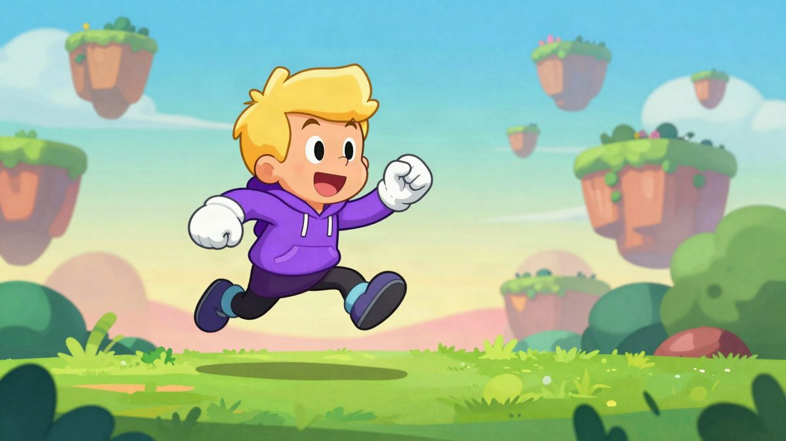

Rayman Legends Retold izlazi 3. prosinca: novi trailer donosi priču i filmske scene

Ubisoft je tjedan dana prije izlaska objavio story trailer za Rayman Legends Retold. Igra izlazi 3. prosinca i donosi novu filmsku priču, šesti svijet, četiri nove glazbene razine te Rayman Origins: Enhanced Edition u paketu.
Ubisoft je objavio novi trailer za platformer Rayman Legends Retold, tjedan dana prije izlaska. Igra izlazi 3. prosinca na PC, PS5, Xbox Series X i S te Nintendo Switch 2. Ubisoft igru opisuje kao "smjelo preoblikovanje" klasične igre Rayman Legends.
Trailer traje nešto manje od dvije minute. Prikazuje izbor iz gameplaya i nove filmske scene, a Ubisoft ga predstavlja kao story trailer.
Nova priča
Retold dobiva novu filmsku priču s potpuno ozvučenim scenama. Nevidljivi zlikovac iz zemlje zlih mrtvaca počeo je širiti otrov Livadom snova. Igrači u ulozi Raymana, Globoxa, Barbare, Velikog Minimusa i drugih likova moraju osloboditi nedužne Teensie iz zatočeništva, skinuti štetnu kletvu s čuvara svijeta i suočiti se s tajanstvenim antagonistom.
Što još donosi
Ubisoft najavljuje šesti svijet, nove i poznate likove te još četiri glazbene razine. U igri će biti širok izbor alternativnih izgleda likova i lokalni kooperativni mod za četiri igrača. U paket je uključen i Rayman Origins: Enhanced Edition.
Razvoj vode Ubisoft Montpellier i Ubisoft Milan.
Reakcije i recenzije
Fanovi originalne igre dočekali su trailer s oduševljenjem. Komentator TomAnorak napisao je: "Klinci su se naigrali GTA VI, sad su na redu pravi muškarci!" Recenzije bi se neslužbeno mogle pojaviti dan prije izlaska, 2. prosinca.
Igra ima tekstualni prijevod na ruski, ali na ruskim izdanjima Steama, Epic Games Storea i Ubisoft Connecta nije dostupna.
Izvor: 3DNews
Povezani članci
- PlayStation 5 je prešao 100 milijuna prodanih konzola, uoči izlaska GTA-e VI11. studenoga 2026.
- Phantom Blade Zero prodan je u više od 4 milijuna primjeraka u samo 72 sata2. studenoga 2026.
 League of Legends: New Dawn stiže iduće godine s novim clientom i obnovljenim Summoner's Riftom15. studenoga 2026.
League of Legends: New Dawn stiže iduće godine s novim clientom i obnovljenim Summoner's Riftom15. studenoga 2026.